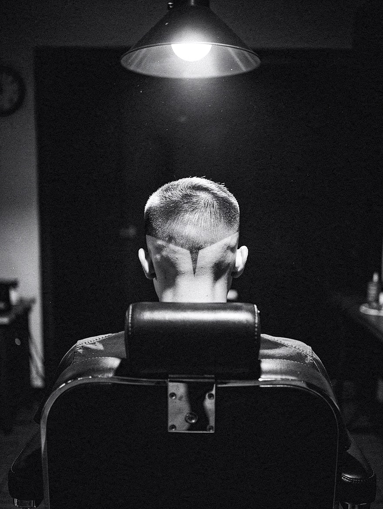
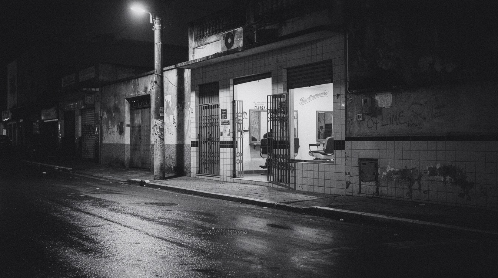

01Tem horário
Marque pelo WhatsApp: serviço, barbeiro, dia e hora. Na véspera chega o lembrete. Na porta, o check-in é só o seu telefone.
Agendar pelo WhatsApp
Barbearia · Rebouças · Curitiba
Marque pelo WhatsApp ou chegue sem horário. O totem da porta te põe na fila e o WhatsApp avisa quando faltar um cliente pra sua vez.
Serviços e preços
Paga no fim, no Pix, débito ou crédito.
Como funciona
Marque pelo WhatsApp: serviço, barbeiro, dia e hora. Na véspera chega o lembrete. Na porta, o check-in é só o seu telefone.
Agendar pelo WhatsAppFaça o check-in no totem da porta e escolha o barbeiro vendo quanto cada um vai demorar. Pode ir tomar um café. Quando faltar um cliente, o WhatsApp te chama.
Ver o check-in do totemEndereço e horário

No WhatsApp são quatro toques: serviço, barbeiro, dia e hora.